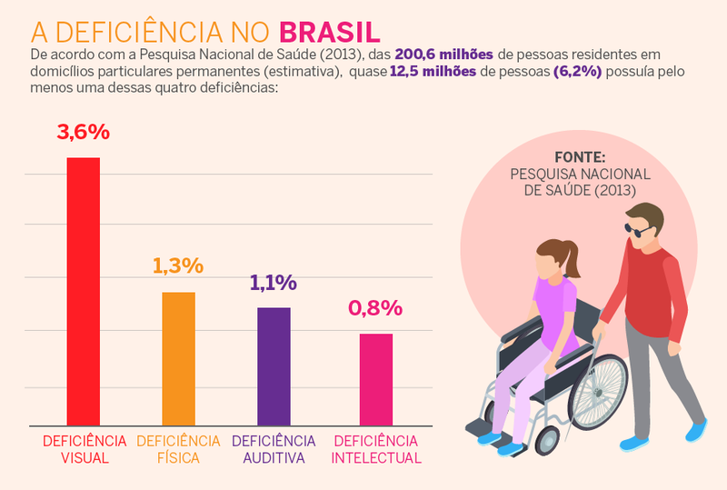

Acessibilidade Digital é a eliminação de barreiras na Web. O conceito pressupõe que os sites e portais sejam projetados de modo que todas as pessoas possam perceber, entender, navegar e interagir de maneira efetiva com as páginas. As diversas barreiras encontradas nos sítios eletrônicos atingem principalmente as pessoas com deficiência. Ao utilizarem a Web e seus recursos, as pessoas com deficiência ou outras limitações, deparam-se com obstáculos que dificultam e, muitas vezes, impossibilitam o acesso aos conteúdos e páginas. No Brasil, segundo o Censo Demográfico do IBGE de 2010, há aproximadamente 45 milhões de pessoas que apresentam pelo menos uma das deficiências investigadas. Esse número representa 23,9% da população brasileira. Um percentual a ser considerado quando discutimos a importância de implementar a acessibilidade nos sítios governamentais.
